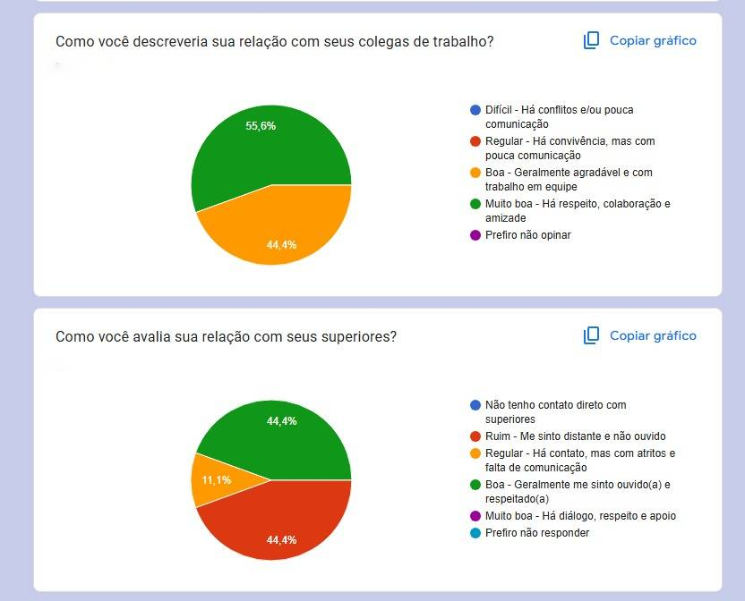
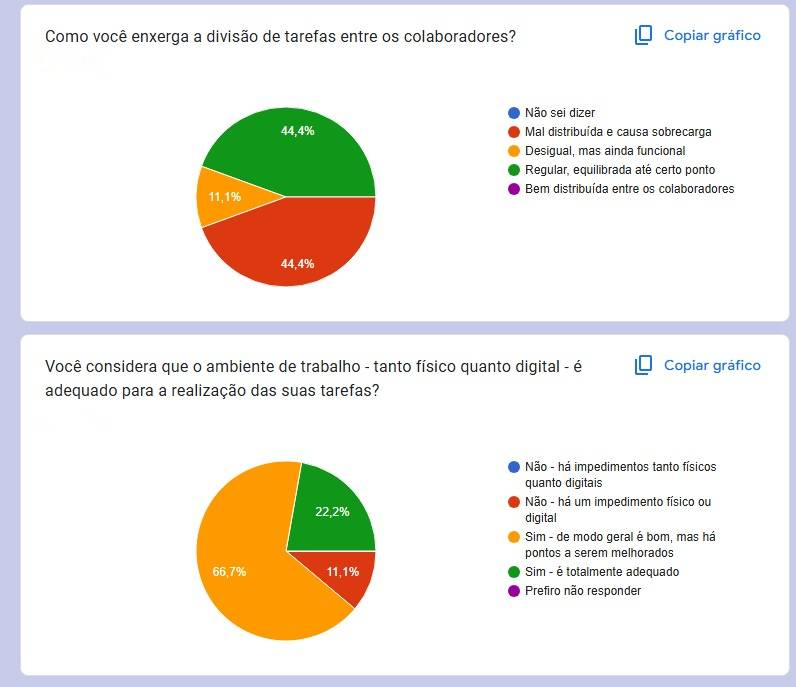
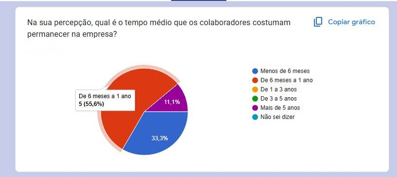

Introdução
Contexto da Análise
Gestão centralizada pela família molda uma cultura autoritária, afetando diretamente o ambiente de trabalho e a identidade da empresa.
Estrutura da Empresa
56% dos funcionários relatam ausência de autonomia, refletindo em desmotivação e sensação de controle excessivo.
Metodologia Utilizada
Presença de supervisão rígida e alta rotatividade (Fordismo), combinadas com acúmulo de tarefas por funcionário (Pós-Fordismo).
Objetivos da Pesquisa
Predomínio da Teoria Clássica de Fayol e da Teoria X de McGregor, evidenciando centralização, hierarquia e desconfiança quanto ao engajamento dos colaboradores.Contextualização
Cultura Organiza-
cional Familiar e Autoritária
Análise feita em uma provedora de internet local, com gestão familiar e atuação direta dos proprietários nos setores administrativos e de RH.
Falta de Autonomia
Empresa de pequeno porte administrada por 4 membros da mesma família, ocupando cargos estratégicos nos setores financeiro, comercial e de RH.
Características Fordistas e Pós-Fordistas
Aplicação de questionário de clima organizacional com 25 perguntas e 10 respostas obtidas, representando uma boa amostra dos funcionários atuais.
Influência das Teorias Clássicas
Investigar causas da alta rotatividade e avaliar fatores como comunicação, ambiente, integração e satisfação dos colaboradores.Vieses da empresa
Influência do Taylorismo/Fordismo
Padronização extrema e separação entre pensar e executar reduzem o trabalhador a uma peça substituível, gerando desmotivação e rotatividade.
Falta de Autonomia
A ausência de autonomia (relatada por 56% dos funcionários) reflete a negação da capacidade intelectual do colaborador, limitando seu engajamento.
Gestão baseada na Teoria X
Controle rígido e desconfiança geram um ciclo de desmotivação, reforçando o comportamento que a própria gestão tenta evitar.
Ausência da Teoria Y
A empresa não adota práticas que valorizem criatividade, responsabilidade e autocontrole, o que contribui para a crise de identidade organizacional.Parecer da Análise
Perfil e Ambiente de Trabalho
Equipe jovem, em início de carreira, com boa diversidade de áreas; porém, há dificuldades com ferramentas, infraestrutura e integração inicial.
Clima e Relações Internas
Clima considerado razoável; colegas se relacionam bem, mas a liderança é percebida como ausente ou ineficiente, afetando motivação e organização..
Gestão e Benefícios
Benefícios avaliados como regulares ou insatisfatórios; falta de plano de carreira e autonomia impacta negativamente a retenção e o desempenho.
Rotatividade e Riscos
Alta rotatividade já presente e tendência de saída futura; principais causas são: liderança fraca, pouco treinamento e falta de perspectiva de crescimento.Respostas
Respostas
Respostas
Respostas
Respostas
Respostas

Respostas

Respostas
Respostas
Respostas
Respostas
Respostas

Respostas
Respostas
Conclusão
Principais Fragi-
lidades Estruturais
Gestão centralizadora, baixa autonomia, liderança fraca, alta rotatividade e cultura organizacional desestruturada comprometem o clima interno.
Modelo de Gestão Ina-
dequado
Predomínio de práticas Tayloristas/Fordistas e da Teoria X contribui para desmotivação e sensação de substituibilidade entre os colaboradores.
Incompa-
tibilidade com o Perfil dos Funcionários
Equipe jovem e inexperiente exige liderança inspiradora e suporte contínuo — carência de plano de carreira, treinamento e benefícios prejudica retenção.